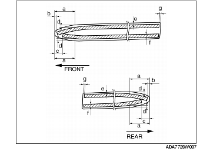
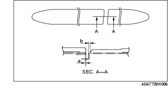

Side protector installation
1. Remove the adhesive remaining on the side protector and the body using a razor.
2. Remove any grease or dirt from the adhesion surface of the side protector and the body.
3. Attach double-sided adhesive tape to the side protector as shown in the figure.

Attachment areas
- a: 29-31 mm {1.15-1.22 in}
- b: 2.0-4.0 mm {0.08-0.15 in}
- c: 11-13 mm {0.44-0.51 in}
- d: 2.0-4.0 mm {0.08-0.15 in}
- e: 1.0-3.0 mm {0.04-0.11 in}
- f: 5.0 mm {0.2 in}
- g: 1.0-3.0 mm {0.04-0.11 in}
4. Peel off the backing paper from the double-sided adhesive tape and attach the side protector onto the body as shown in the figure.

Clearance